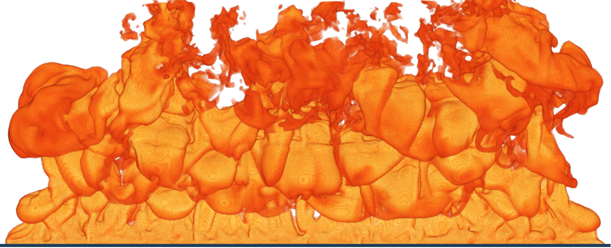

Overview¶
General Information¶
The lecture Fire Simulations at the University of Wuppertal is organised by the chair Computational Civil Engineering (CCE). The 2019 founded chair is mainly concerned with the research and development of new computer-based models. The focus of the application is the numerical simulation of fire and smoke propagation in buildings.

This is the first year that we offer this script. The motivation to create this script is on the one hand to give the participants of the lecture a possibility to read the contents. And on the other hand, to make this content freely available to external or former participants.
However, this script is very short and will remain so. Much of the content is already available in greater depth, so that reference is made to the relevant passages - instead of simply copying them.
As the script is under development, we welcome constructive suggestions and your feedback. This way you can support our whole fire science community.
For the University of Wuppertal students: All organisational information on the procedure can be found on the CCE website on the fire simulations lecture.
Contents of the Lecture Notes¶
It is planned, that this script will not only contain the contents of the lecture Fire Simulations but also other contents linked to this lecture, such as FDS Data Analysis and Using High Performance Computers for Fire Simulations. In the course of the lecture, we will announce the contents relevant for you accordingly.
The script also contains exercises for all topics, with and without solution paths, but always with a result or the possibility of validating your solution.
Do not print out the script or save it elsewhere. This way you have the latest version, which is continuously improved and supplemented with content.
The script will always remain freely accessible.
The lecture notes and exercises are designed for FDS version 6.7.5, and thus may not be valid / reproducable for other versions.
Contributors¶
Contributors to the development of the script and the exercises are (in alphabetical order):
Lukas Arnold
Kristian Börger
Karen de Lannoye
Keyvan Najarian
Jan Vogelsang
My Linh Würzburger
Theses¶
We offer theses (BA, MA, PhD) on many different topics.
an overview of topics and previously supervised theses can be found on the thesis website
The overview of our publications can also help you to find a topic.
If you are interested, please contact Lukas Arnold @ University of Wuppertal or @ Forschungszentrum Jülich
Acknowledgements¶
The software tools used in the lecture and the creation of the materials are mostly freely available, open source and developed by volunteers. In particular, we would like to thank the following teams for their work
Team of FDS
Team of Jupyter
Team of JupyterLab
Team of Jupter Book
Contact¶
How to reach us:
As a participant of the lecture: best via the associated moodle course
External interested parties best used our email list.
Contact details for individuals can be found on the staff website
License¶
These lecture notes and tools are licensed under the Creative Commons Attribution-ShareAlike 4.0 International License.